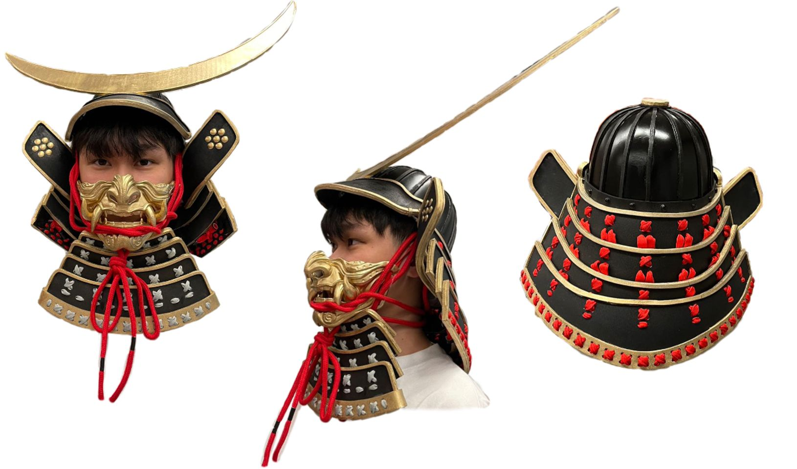
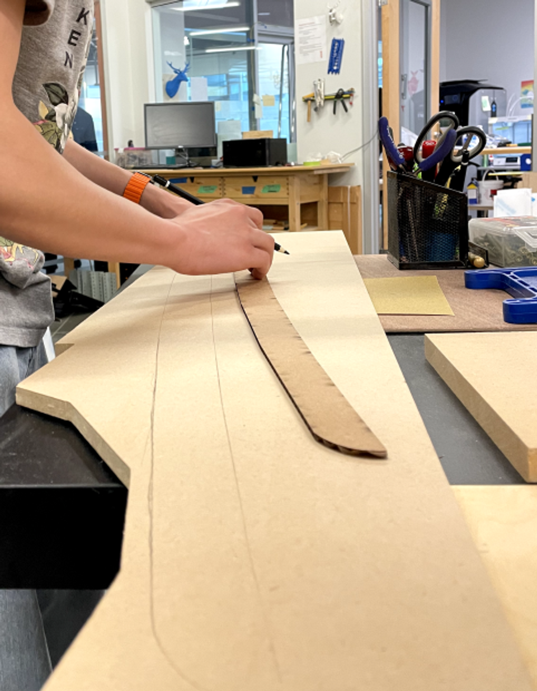
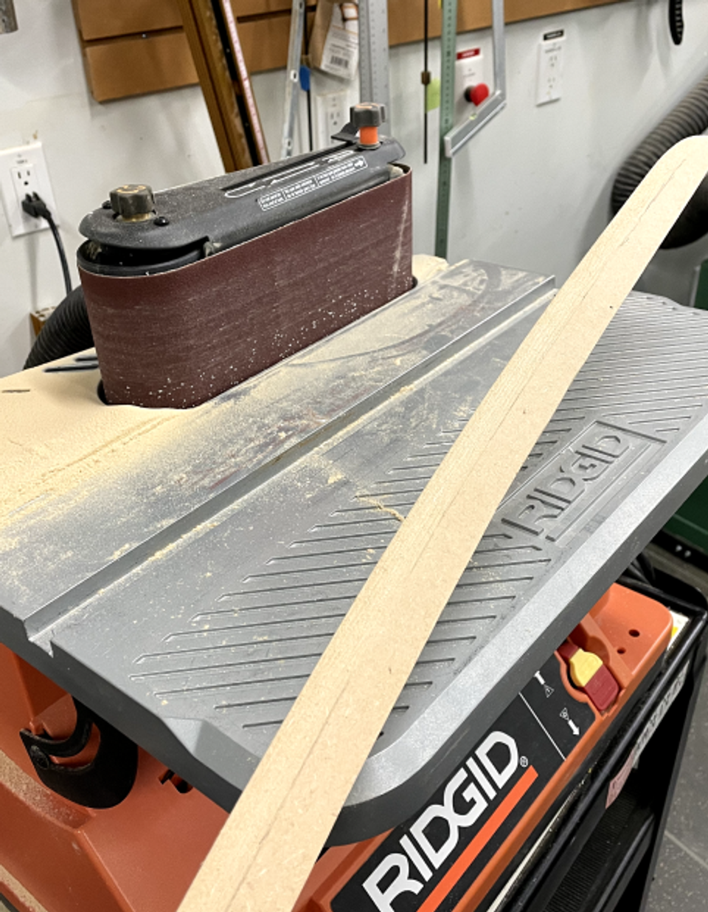
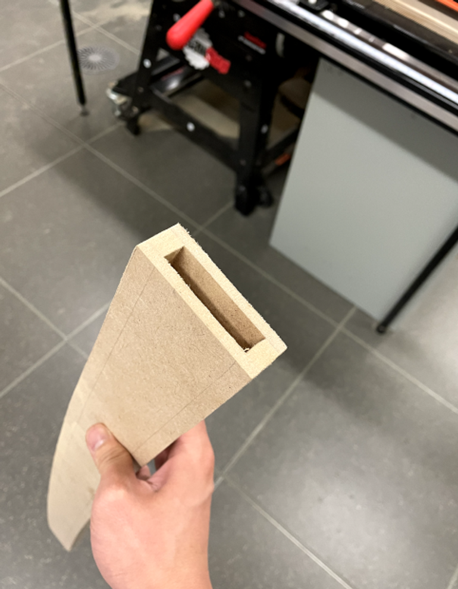
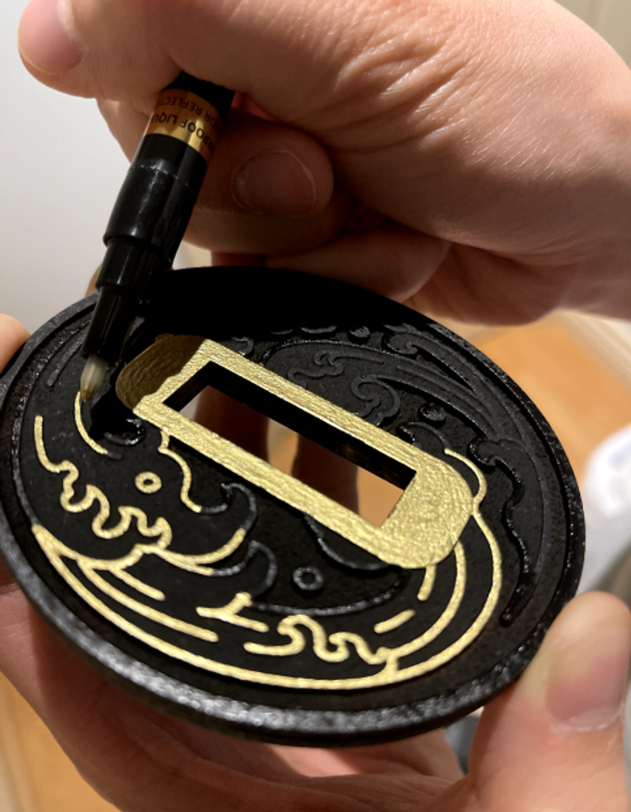
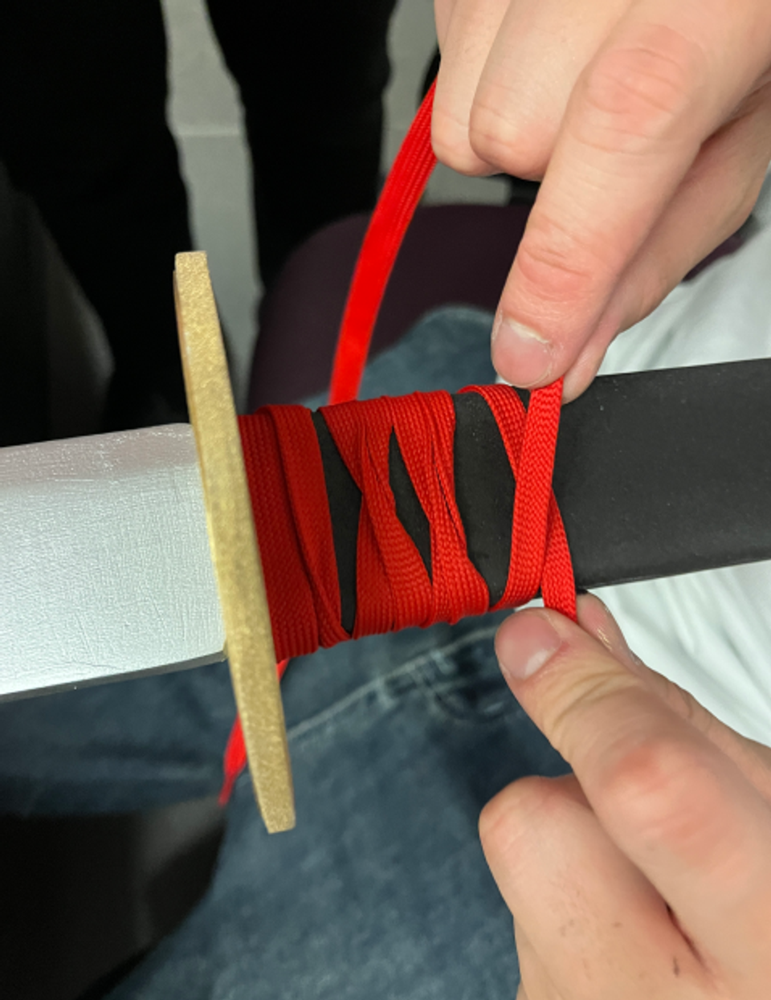
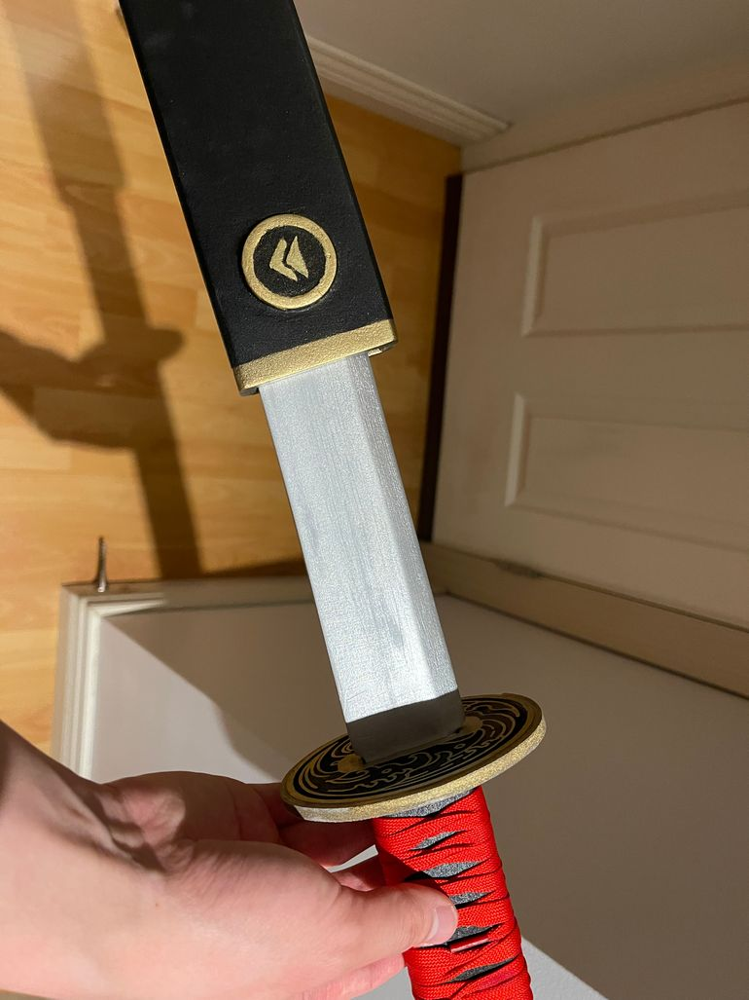

The Samurai mask
Creating the mask for our project was a time-consuming process, especially because using 3D printing to craft a mask that fit my face perfectly and looked good was challenging. I had to balance comfort and appearance, which required manually stretching and resizing the mask, followed by multiple 3D print tests to achieve the best result.
What I've learned: While adjusting the mask didn't take long, the printing process did. Each 3D print took several hours, plus additional time to smooth the outer layer by letting it sit in a dissolvable solution. Through this experience, I learned the importance of double-checking measurements, especially avoiding mistakes with the X and Y axes when inputting data. I also realized the value of starting early on time-consuming tasks, thanks to my TA's advice to prioritize 3D printing early on. This process taught me patience and the importance of staying calm, especially as deadlines approached, to avoid errors caused by stress.






The Katana
The katana-making process was the most memorable part of this project for me. It taught me that hands-on projects often come with unexpected challenges that can disrupt original design plans, and this was especially true for creating the katana. From choosing materials to finishing the scabbard, I faced issues at every step. However, I enjoyed solving these problems, which kept me motivated throughout the process.
What I've learned: This experience reinforced the importance of perseverance in both design and programming. Overcoming these challenges has helped me improve and grow academically. I also learned the value of seeking advice from my teammates, TA, and professors. Their input provided multiple perspectives and solutions that prevented me from getting stuck on my own ideas, which could have led the project to a dead end. The katana-making process taught me not to be ashamed of asking for help and highlighted the strength that comes from helping one another.
REFLECTION
Leading this project taught me many valuable lessons, especially about time management. I realized that not everyone works at the same pace, and factors like individual strengths and passions play a big role. I'm fortunate to have a dedicated team that valued this project as much as I did, but we quickly wore ourselves out due to the immense detail required for the armor. Our dedication led us to a point where we questioned if it was worth it.
As the leader, I knew I had to step up during this challenging time. I organized a team dinner where we took a break and talked about things outside the project. It was clear that we all needed to recharge. This experience taught me that leadership isn’t just about managing schedules and tasks; it's also about taking care of the team’s emotions and maintaining a positive work environment.
I'm grateful for my team's constant feedback, which helped me grow as a leader. The final product was a success and was even displayed on campus, a testament to our hard work and teamwork.